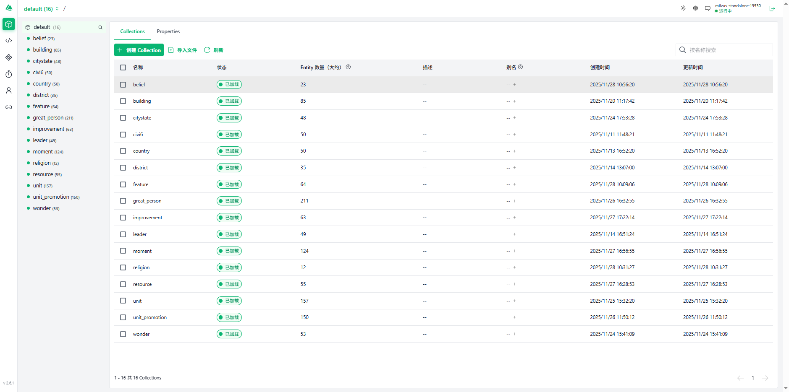

项目概览
本文讲解如何基于 Civilopedia 构建《文明 6》主题的 RAG（检索增强生成）问答系统：爬取 → 清洗拆分 → 向量化入库（Milvus）→ 路由判定多路检索 → 模型生成答案，并逐个方法拆解其设计与含义。
技术栈与部署
- 运行环境：Python 3.11，Docker
- 框架组件：LangChain（链路与组件）、FastAPI（对外 API）
- 模型：聊天模型 gpt-oss:120b-cloud、llama3.1；嵌入模型 embeddinggemma
- 向量数据库：Milvus（本地/远程）
数据爬取（方法拆解）
目标来源为 Civilopedia：https://www.civilopedia.net。以下示例展示伟人页面的采集与解析流程，拆解为：1) 构造采集清单；2) 解析页面；3) 封装入库文档。
great_persons = [
"alvar_aalto",
"ada_lovelace",
"bi_sheng",
"charles_correa",
"kenzo_tange",
"filippo_brunelleschi",
"gustave_eiffel",
"jane_drew",
"leonardo_da_vinci",
"robert_goddard",
"isidore_of_miletus",
"mimar_sinan",
"nikola_tesla",
"shah_jahan",
"james_of_st_george",
"wernher_von_braun",
"sergei_korolev",
"imhotep",
"john_a_roebling",
"joseph_paxton",
"james_watt",
"ahmad_shah_massoud",
"ana_nzinga",
"aethelflaed",
"el_cid",
"boudica",
"dandara",
"douglas_macarthur",
"dwight_eisenhower",
"georgy_zhukov",
"gustavus_adolphus",
"hannibal_barca",
"simon_bolivar",
"marina_raskova",
"napoleon_bonaparte",
"samori_ture",
"joan_of_arc",
"sudirman",
"sun_tzu",
"timur",
"tupac_amaru",
"vijaya_wimalaratne",
"john_monash",
"rani_lakshmibai",
"trung_trac",
"abdus_salam",
"albert_einstein",
"alfred_nobel",
"alan_turing",
"aryabhata",
"erwin_schrodinger",
"emilie_du_chatelet",
"abu_al_qasim_al_zahrawi",
"isaac_newton",
"omar_khayyam",
"hildegard_of_bingen",
"charles_darwin",
"dmitri_mendeleev",
"janaki_ammal",
"carl_sagan",
"margaret_mead",
"mary_leakey",
"euclid",
"stephanie_kwolek",
"hypatia",
"ibn_khaldun",
"james_young",
"zhang_heng",
"galileo_galilei",
"helena_rubinstein",
"jamsetji_tata",
"masaru_ibuka",
"colaeus",
"raja_todar_mal",
"levi_strauss",
"mary_katherine_goddard",
"marco_polo",
"marcus_licinius_crassus",
"melitta_bentz",
"piero_de_bardi",
"giovanni_de_medici",
"sarah_breedlove",
"stamford_raffles",
"jakob_fugger",
"estee_lauder",
"adam_smith",
"ibn_fadlan",
"irene_of_athens",
"john_rockefeller",
"john_spilsbury",
"john_jacob_astor",
"zhang_qian",
"zhou_daguan",
"amrita_sher_gil",
"el_greco",
"edmonia_lewis",
"andrey_rublev",
"angelica_kauffman",
"boris_orlovsky",
"hasegawa_tohaku",
"qiu_ying",
"donatello",
"katsushika_hokusai",
"gustav_klimt",
"kamal_ud_din_behzad",
"claude_monet",
"rembrandt_van_rijn",
"mary_cassatt",
"marie_anne_collot",
"michelangelo",
"sofonisba_anguissola",
"titian",
"wassily_kandinsky",
"vincent_van_gogh",
"hieronimus_bosch",
"jang_seung_eop",
"antonin_dvorak",
"antonio_carlos_gomez",
"antonio_vivaldi",
"yatsuhashi_kengyo",
"peter_ilyich_tchaikovsky",
"dimitrie_cantemir",
"franz_liszt",
"frederic_chopin",
"gauhar_jaan",
"juventino_rosas",
"clara_schumann",
"liliuokalani",
"liu_tianhua",
"ludwig_van_beethoven",
"mykola_leontovych",
"scott_joplin",
"wolfgang_amadeus_mozart",
"johann_sebastian_bach",
"adi_shankara",
"francis_of_assisi",
"irenaeus",
"haji_huud",
"confucius",
"laozi",
"martin_luther",
"madhva_acharya",
"bodhidharma",
"john_the_baptist",
"songtsan_gampo",
"zoroaster",
"o_no_yasumaro",
"thomas_aquinas",
"simon_peter",
"siddhartha_gautama",
"edgar_allen_poe",
"emily_dickinson",
"ovid",
"bhasa",
"beatrix_potter",
"f_scott_fitzgerald",
"homer",
"hg_wells",
"gabriela_mistral",
"jane_austen",
"geoffrey_chaucer",
"karel_capek",
"rabindranath_tagore",
"li_bai",
"leo_tolstoy",
"rumi",
"margaret_cavendish",
"mary_shelley",
"marie_catherine_d_aulnoy",
"mark_twain",
"miguel_de_cervantes",
"niccolo_machiavelli",
"qu_yuan",
"william_shakespeare",
"alexander_pushkin",
"valmiki",
"johann_wolfgang_von_goethe",
"james_joyce",
"murasaki_shikibu",
"artemisia",
"togo_heihachiro",
"franz_von_hipper",
"francis_drake",
"gaius_duilius",
"grace_hopper",
"hanno_the_navigator",
"horatio_nelson",
"clancy_fernando",
"rajendra_chola",
"laskarina_bouboulina",
"leif_erikson",
"yi_sun_sin",
"matthew_perry",
"chester_nimitz",
"joaquim_marques_lisboa",
"santa_cruz",
"themistocles",
"himerios",
"sergey_gorshkov",
"zheng_he",
"ching_shih",
"ferdinand_magellan",
"commandante_jose_de_sucre",
"commandante_narino",
"commandante_paula_santander",
"commandante_macgregor",
"commandante_antonio_paez",
"commandante_ribas",
"commandante_urdaneta",
"commandante_montilla",
"commandante_piar",
"commandante_marino"
]
from bs4 import BeautifulSoup
from langchain_core.documents import Document
from langchain_text_splitters import RecursiveCharacterTextSplitter
from langchain_community.vectorstores import Milvus
from langchain_ollama import OllamaEmbeddings
import requests
base_url='https://www.civilopedia.net/zh-CN/gathering-storm/greatpeople/great_person_individual_'
docs=[]
for item in great_persons:
url=f"{base_url}{item}"
print(url)
response=requests.get(url)
if response.status_code==404:
continue
soup=BeautifulSoup(response.content,'html.parser')
name=soup.find('div',class_='App_pageHeaderText__SsfWm App_mainTextColor__6NGqD App_mainTextColor__6NGqD').get_text(strip=True)
print(name)
special_ablities=[]
special_elem=soup.find('div',class_='App_pageLeftColumn__huW_2')
if len(special_elem.find_all('div',class_='App_leftColumnItem__GHlpJ'))>2:
special_ability_1=special_elem.find_all('div',class_='App_leftColumnItem__GHlpJ')[2] if special_elem else None
special_ablities.append(special_ability_1.find('p',class_='Component_headerBodyHeaderText__LuO9w App_mainTextColor__6NGqD').get_text(strip=True) if special_ability_1.find('p',class_='Component_headerBodyHeaderText__LuO9w App_mainTextColor__6NGqD') else special_ability_1.find('div',class_='Component_headerBodyHeaderText__LuO9w App_mainTextColor__6NGqD').get_text(strip=True) if special_ability_1.find('div',class_='Component_headerBodyHeaderText__LuO9w App_mainTextColor__6NGqD') else '' )
special_ablities.append(special_ability_1.find('p',class_='Component_headerBodyHeaderBody__MkvCp App_mainTextColor__6NGqD').get_text(strip=True) if special_ability_1.find('p',class_='Component_headerBodyHeaderBody__MkvCp App_mainTextColor__6NGqD') else special_ability_1.find('div',class_='Component_headerBodyHeaderBody__MkvCp App_mainTextColor__6NGqD').get_text(strip=True) if special_ability_1.find('div',class_='Component_headerBodyHeaderBody__MkvCp App_mainTextColor__6NGqD') else '' )
if len(special_elem.find_all('div',class_='App_leftColumnItem__GHlpJ'))>3:
special_ability_2=special_elem.find_all('div',class_='App_leftColumnItem__GHlpJ')[3]
special_ablities.append(special_ability_2.find('p',class_='Component_headerBodyHeaderText__LuO9w App_mainTextColor__6NGqD').get_text(strip=True) if special_ability_2.find('p',class_='Component_headerBodyHeaderText__LuO9w App_mainTextColor__6NGqD') else special_ability_2.find('div',class_='Component_headerBodyHeaderText__LuO9w App_mainTextColor__6NGqD').get_text(strip=True) if special_ability_2.find('div',class_='Component_headerBodyHeaderText__LuO9w App_mainTextColor__6NGqD') else '' )
special_ablities.append(special_ability_2.find('p',class_='Component_headerBodyHeaderBody__MkvCp App_mainTextColor__6NGqD').get_text(strip=True) if special_ability_2.find('p',class_='Component_headerBodyHeaderBody__MkvCp App_mainTextColor__6NGqD') else special_ability_2.find('div',class_='Component_headerBodyHeaderBody__MkvCp App_mainTextColor__6NGqD').get_text(strip=True) if special_ability_2.find('div',class_='Component_headerBodyHeaderBody__MkvCp App_mainTextColor__6NGqD') else '' )
special_ablities_text="\n".join(special_ablities)
print(special_ablities_text)
duty_elem=soup.find_all('div',class_='StatBox_statBoxFrame__Cgdpy')[0]
duties=[]
for item in duty_elem.find_all('div',class_='StatBox_statBoxComponent__M3Gcj') if duty_elem else []:
duties.append(item.get_text(strip=True))
duty_text="\n".join(duties)
print(duty_text)
doc=Document(
page_content=f"伟人姓名:{name}\n特色能力:{special_ablities_text}\n身份:{duty_text}",
metadata={"source":url}
)
docs.append(doc)
text_splitter=RecursiveCharacterTextSplitter(chunk_size=1000,chunk_overlap=200)
split_docs=text_splitter.split_documents(docs)
embeddings=OllamaEmbeddings(model="embeddinggemma")
vector_store=Milvus.from_documents(split_docs,embedding=embeddings,connection_args={"host":"localhost","port":"19530"},collection_name="great_person")
方法含义与提示
环境变量：
CIVI6_OLLAMA_HOST：Ollama 服务器地址（含端口）。MILVUS_HOST/MILVUS_PORT：Milvus 服务地址与端口。
向量数据库
我将文明6的数据信息，分成了几张表如图(宗教，建筑，国家等)

正式代码
核心思路：先判定问题涉及的主题表（如宗教/建筑/国家等），为每个表构造检索器并行召回上下文，最后交由生成模型整合回答。
from fastapi import FastAPI
from pydantic import BaseModel, Field
from typing import List, Literal
import os
from langchain_ollama import ChatOllama, OllamaEmbeddings
from langchain_core.prompts import ChatPromptTemplate
from langchain_core.output_parsers import StrOutputParser
from langchain_core.runnables import RunnableParallel
from lib import get_vectorstore_from_milvus, generate_answer_by_multiple_retriever
app = FastAPI()
class AskRequest(BaseModel):
question: str
class AskResponse(BaseModel):
answer: str
class RouteQuery(BaseModel):
tables: List[Literal[
"belief", "religion", "country", "leader", "building", "wonder",
"resource", "citystate", "district", "feature", "great_person",
"improvement", "moment", "unit", "unit_promotion"
]] = Field(description="这个问题与哪些关键字有关，返回对应的表名")
def generate_answer(question: str) -> str:
"""
根据用户的问题，生成文明6相关的答案
"""
template = """
你是一个文明6的助手，根据用户的问题，判断应该查询哪些数据库表，表有以下几种：[]belief,religion,country,leader,building,citystate,country,district,feature,great_person,improvement,moment,resource,unit,unit_promotion,wonder]，
请你判断用户的问题应该查询哪些表，返回格式为json，字段为tables，值为一个数组，数组元素为表名。
重要规则（必须遵守）：
- 禁止以任何形式进行省略，包括但不限于：
- “为避免篇幅过长”
- “以下内容已省略”
- “部分内容略”
- “……”
- 必须完整输出所有检索到的内容，不允许合并，不允许跳过，不允许折叠。
- 只要上下文里有多少条，就必须全部原样列出。
- 输出不完整视为错误。
用户的问题是：{question}
"""
prompt = ChatPromptTemplate.from_template(template)
llm = ChatOllama(model="gpt-oss:120b-cloud",base_url='https://ollama.com:443')
chain = prompt | llm | StrOutputParser()
response = chain.invoke({"question": question})
# 换成可靠的 JSON 模型
structured_llm = ChatOllama(model="llama3.1", base_url=os.getenv("CIVI6_OLLAMA_HOST"))
structured_chain = structured_llm.with_structured_output(RouteQuery)
result = structured_chain.invoke(response)
embeddings = OllamaEmbeddings(model="embeddinggemma", base_url=os.getenv("CIVI6_OLLAMA_HOST"))
retriever_dict = {}
for table in result.tables:
vectorstore = get_vectorstore_from_milvus(embeddings, collection_name=table,connection_args={"host":os.getenv("MILVUS_HOST","localhost"),"port":os.getenv("MILVUS_PORT","19530")})
retriever_dict[table] = vectorstore.as_retriever(search_kwargs={"k": 300})
return generate_answer_by_multiple_retriever(
question,
RunnableParallel(retriever_dict),
llm
)
@app.post("/ask", response_model=AskResponse)
def ask(req: AskRequest):
answer = generate_answer(req.question.strip())
return AskResponse(answer=answer)
类库方法
from langchain_core.runnables import RunnableParallel, RunnablePassthrough
from langchain_core.prompts import ChatPromptTemplate
from langchain_core.output_parsers import StrOutputParser
def generate_answer(question,retriever,llm):
template_message = """
你是一名文明6的专家，你的任务是根据用户的问题严格回答。请遵守以下规则：
1. 只能使用上下文（context）中的内容，禁止使用上下文以外的知识。
2. 如果上下文包含多条信息，请逐条列出所有内容，确保不要遗漏。
3. 如果上下文中有多篇文档，请按 source 分别回答，不允许将不同文档的内容合并。
4. 不允许自行概括、推断或生成额外信息。
5. 回答应简洁、清晰，直接列出事实内容。
用户问题：
{question}
上下文：
{context}
请严格根据上下文和 source 列出答案：
"""
prompt=ChatPromptTemplate.from_template(template_message)
rag_chain = (
RunnableParallel({
"context": retriever, # 检索上下文
"question": RunnablePassthrough(), # 直接传入问题
})
| prompt
| llm
| StrOutputParser()
)
return rag_chain.invoke(question)
def generate_answer_by_multiple_retriever(question,multiple_retriever,llm):
template_message = """
你是一名文明6的专家，你的任务是根据用户的问题严格回答。请遵守以下规则：
1. 只能使用上下文（context）中的内容，禁止使用上下文以外的知识。
2. 如果上下文包含多条信息，请逐条列出所有内容，确保不要遗漏。
3. 如果上下文中有多篇文档，请按 source 分别回答，不允许将不同文档的内容合并。
4. 不允许自行概括、推断或生成额外信息。
5. 回答应简洁、清晰，直接列出事实内容。
用户问题：
{question}
上下文：
{context}
请严格根据上下文和 source 列出答案：
"""
prompt=ChatPromptTemplate.from_template(template_message)
rag_chain = (
RunnableParallel({
"context": multiple_retriever, # 检索上下文
"question": RunnablePassthrough(), # 直接传入问题
})
| prompt
| llm
| StrOutputParser()
)
return rag_chain.invoke(question)
def store_in_milvus(chunk_size,chunk_overlap,embeddings,docs,collection_name,connection_args={"host":"localhost","port":"19530"}):
from langchain_text_splitters import RecursiveCharacterTextSplitter
from langchain_community.vectorstores import Milvus
text_splitter=RecursiveCharacterTextSplitter(chunk_size=chunk_size,chunk_overlap=chunk_overlap)
splitted_docs=text_splitter.split_documents(docs)
return Milvus.from_documents(splitted_docs,embeddings,connection_args=connection_args,collection_name=collection_name)
def get_vectorstore_from_milvus(embeddings,collection_name,connection_args={"host":"localhost","port":"19530"}):
from langchain_community.vectorstores import Milvus
return Milvus(embedding_function=embeddings,connection_args=connection_args,collection_name=collection_name)
def load_config(path):
with open(path,"r",encoding="utf-8") as f:
import json
return json.load(f)
设计说明：
- 路由判定：先用判定链确定涉及的集合（如宗教/建筑/国家等）。
- 结构化输出：二次调用结构化模型
with_structured_output(RouteQuery)，保证 JSON 稳定可解析。 - 多路检索：对每个集合创建检索器并行召回，聚合上下文后交给生成模型整合回答。